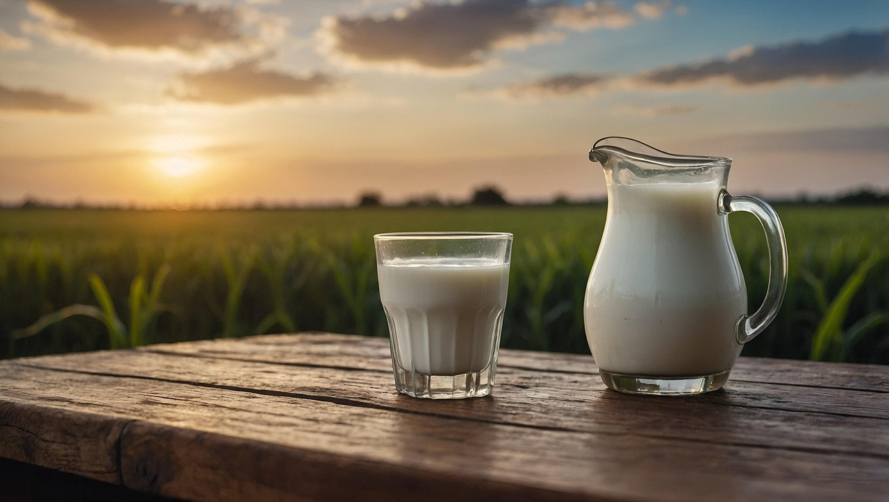
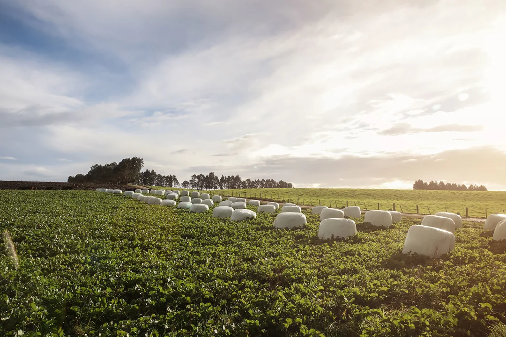

Welcome to NZ Dairy
Pure Taste from New Zealand

New Zealand is renowned for its pristine landscapes, fresh air, and clean water. Dairy cows graze freely on lush pastures all year round, producing milk that is naturally rich and nutritious. Strict food safety and quality regulations ensure every step — from pasture to processing — meets the highest standards. New Zealand dairy consistently matches or exceeds international benchmarks for nutrition, safety, and traceability.
New Zealand is home to some of the world’s best dairy products.
With its fresh pastures, clean air, and pure water, NZ dairy has earned global recognition for its quality, safety, and nutrition.
At NZ Dairy, we care not only about quality but also about the planet.
Our farmers use sustainable practices to protect the land, the animals, and future generations.

New Zealand dairy farming embraces sustainable practices — from reducing carbon emissions and recycling water to minimizing plastic use. With a strong focus on working in harmony with nature, the industry promotes an eco-friendly image worldwide. Producing far more than the local market requires, New Zealand is one of the world’s leading dairy exporters.